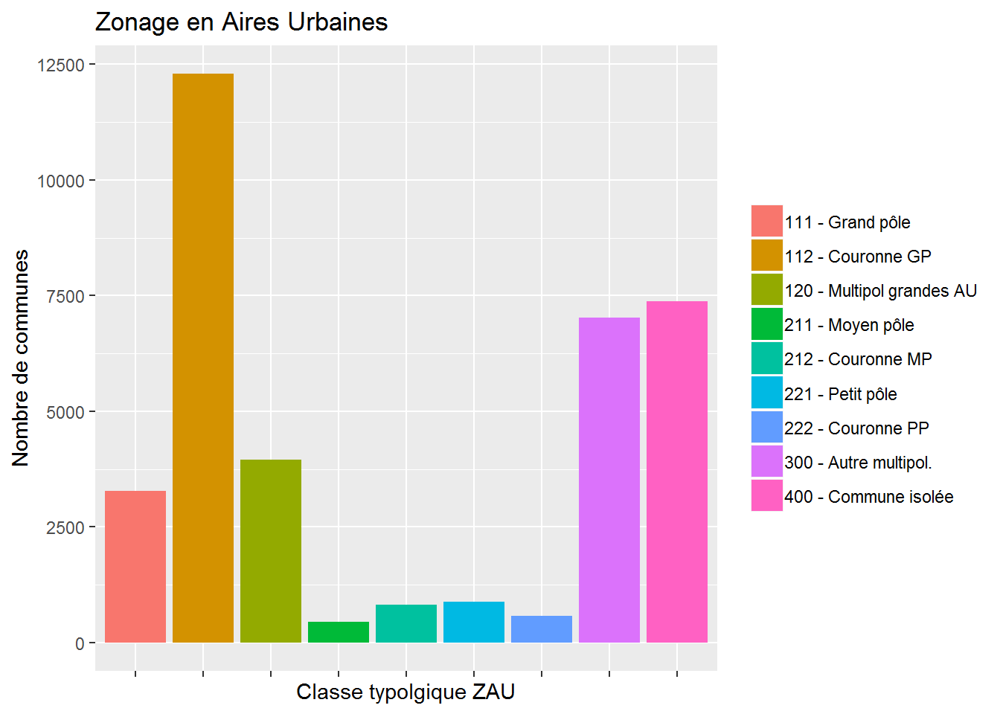
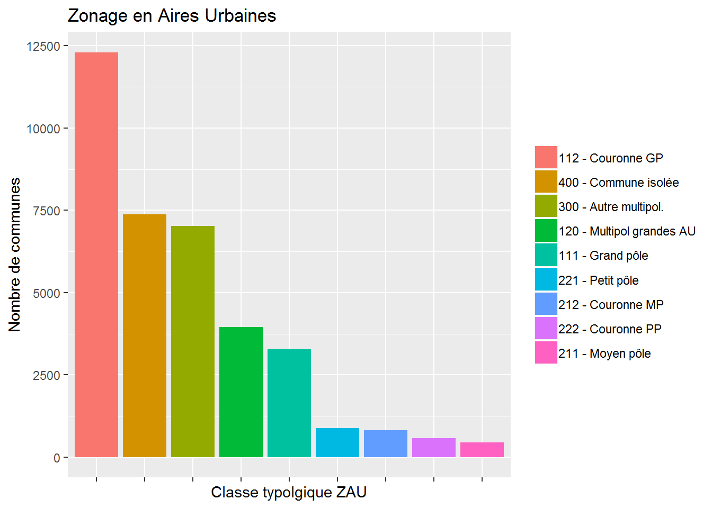
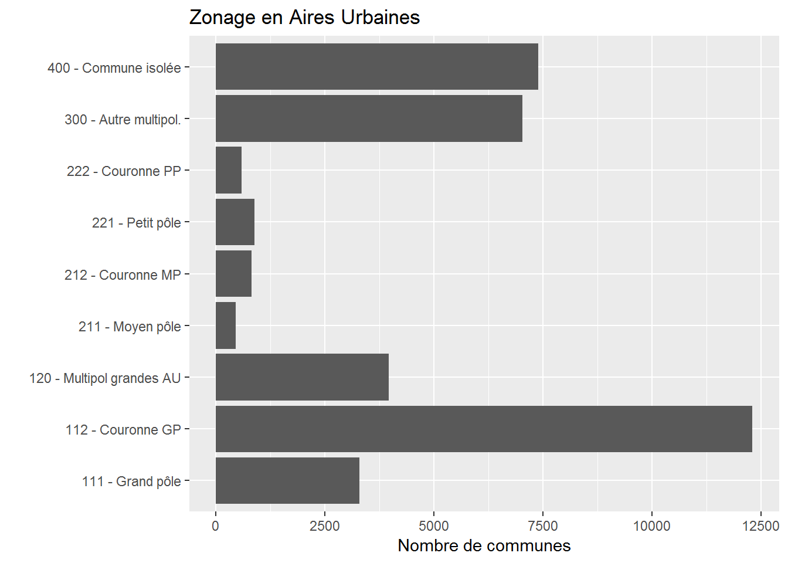
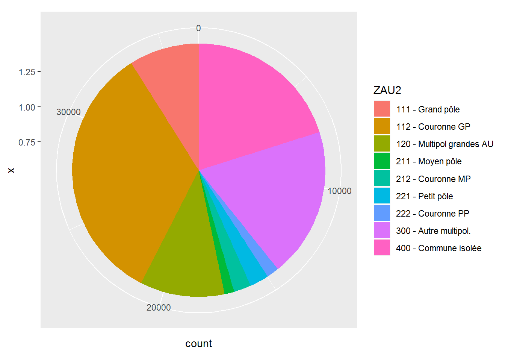

Chapitre 4 Une variable qualitative
Les données qualitatives peuvent faire l’objet de dénombrement, en effectif ou en proportion.
Petit rappel : cours en ligne et liens avec Excel.
Pour décrire une variable qualitative, on calcule :
Le nombre d’occurrence de chacune des modalités dans la base (ex : le nombre de communes de chaque type ZAU) : \(N_i\) où \(i \in \{1 ... k\}\) représente l’ensemble des modalités
La proportion (ou fréquence) de chacune des modalités : \(f_i = \frac{N_i}{N}\)
On peut calculer des effectifs pondérés (exemple : la population des communes de chaque type ZAU). Dans ce cas \(N_i = \sum_c w_i\cdot \mathbb{I}_{c = i}\) et \(N = \sum_c w_i\), où c est l’ensemble des communes.
Pour un premier coup d’oeil à une variable qualitative, on peut utiliser la fonction générique summary().
select (dat, ZAU) %>%
summary () ## ZAU
## 112 - Couronne d'un grand pôle :12297
## 400 - Commune isolée hors influence des pôles : 7383
## 300 - Autre commune multipolarisée : 7021
## 120 - Multipolarisée des grandes aires urbaines: 3962
## 111 - Grand pôle (plus de 10 000 emplois) : 3285
## 221 - Petit pôle (de 1 500 à 5 000 emplois) : 888
## (Other) : 18534.1 Tableaux de synthèse
4.1.1 Comptage
On cherche le nombre d’occurence de chacune des modalités. Cela s’effectue grâce à la fonction table().
pull (dat, ZAU) %>%
table () ## .
## 111 - Grand pôle (plus de 10 000 emplois)
## 3285
## 112 - Couronne d'un grand pôle
## 12297
## 120 - Multipolarisée des grandes aires urbaines
## 3962
## 211 - Moyen pôle (5 000 à 10 000 emplois)
## 456
## 212 - Couronne d'un moyen pôle
## 815
## 221 - Petit pôle (de 1 500 à 5 000 emplois)
## 888
## 222 - Couronne d'un petit pôle
## 582
## 300 - Autre commune multipolarisée
## 7021
## 400 - Commune isolée hors influence des pôles
## 7383La fonction DT::datatable() permet une mise en forme moins austère des dataframes.
pull (dat, ZAU) %>%
table () %>%
as.data.frame () %>%
datatable (rownames = FALSE, colnames = c ("ZAU", "Nombre"))4.1.2 Comptage pondéré
On ne cherche plus à afficher le nombre d’occurence de chaque modalités, mais à connaître le poids d’une variable sur ces modalités. Il s’obtient avec la fonction xtabs(). Par exemple, si on veut connaître la population pour chaque ZAU :
xtabs (formula = P14_POP ~ ZAU, data = dat) %>%
as.data.frame () %>%
datatable (rownames = FALSE, colnames = c ("ZAU", "Population"))4.1.3 Fréquences
On souhaite maintenant connaître le pourcentage de communes que représente chaque ZAU. Cela se fait grâce à la fonction table() suivi cette fois de prop.table(). Par exemple :
pull (dat, ZAU) %>%
table () %>%
prop.table () %>%
round (3) %>%
as.data.frame () %>%
datatable (rownames = FALSE, colnames = c ("ZAU", "Fréquence")) %>%
formatPercentage ('Freq', 1)4.1.4 Fréquences pondérées
On souhaite finalement connaître le pourcentage de population que représente chaque ZAU. En respecant la même logique que précédemment : cela se fait grâce à la fonction xtabs() suivi de prop.table(). Par exemple :
xtabs (formula = P14_POP ~ ZAU, data = dat) %>%
prop.table () %>%
round (3) %>%
as.data.frame () %>%
datatable (rownames = FALSE, colnames = c("ZAU", "% de la Population"))%>%
formatPercentage('Freq', 1)4.2 Graphiques
4.2.1 Diagramme en barres (ou en bâtons)
On souhaite connaître le nombre de communes dans chaque ZAU. Grâce à notre base communale, on cherche donc le nombre de lignes pour chaque ZAU.
ggplot (dat, aes (x = ZAU2, fill = ZAU2)) +
geom_bar () +
ggtitle ("Zonage en Aires Urbaines") +
xlab (label = "Classe typolgique ZAU") +
ylab (label = "Nombre de communes") +
theme (axis.text.x = element_blank ()) +
theme(legend.title = element_blank())
Ceci n’est pas un histogramme ! C’est un diagramme en barres. La lisibilité est compliqué en raison de l’ordre des facteurs. Grâce aux fonctions vues précédemment, on peut modifier cet ordre :
ggplot (dat, aes (x = fct_infreq (ZAU2), fill = fct_infreq (ZAU2))) +
geom_bar () +
ggtitle ("Zonage en Aires Urbaines") +
xlab (label = "Classe typolgique ZAU") +
ylab (label = "Nombre de communes") +
theme (axis.text.x = element_blank ()) +
theme(legend.title = element_blank())
D’autres présentations sont possibles. Par exemple, avec les intitulés des modalités sur l’axe (obtenu grâce à coord_flip(), il n’y donc plus besoin de différencier par les couleurs, ni de la légende. La disposition en barres horizontales permet d’afficher ces intitulés longs.
ggplot (dat, aes (x = ZAU2)) +
geom_bar () +
ggtitle ("Zonage en Aires Urbaines") +
ylab (label = "Nombre de communes") +
xlab ("") +
theme (legend.position = "none") +
coord_flip ()
4.2.2 Diagramme en secteurs
Cette forme est à éviter autant que possible car sa lecture est moins facile que celle des diagrammes en barres. Elle s’obtient grâce à coord_polar().
ggplot (dat, aes (x = 1, fill = ZAU2)) +
geom_bar () +
coord_polar (theta = "y")